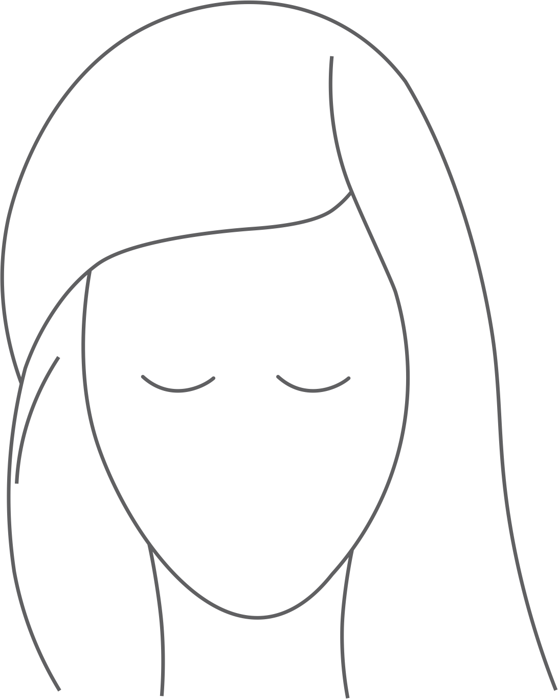
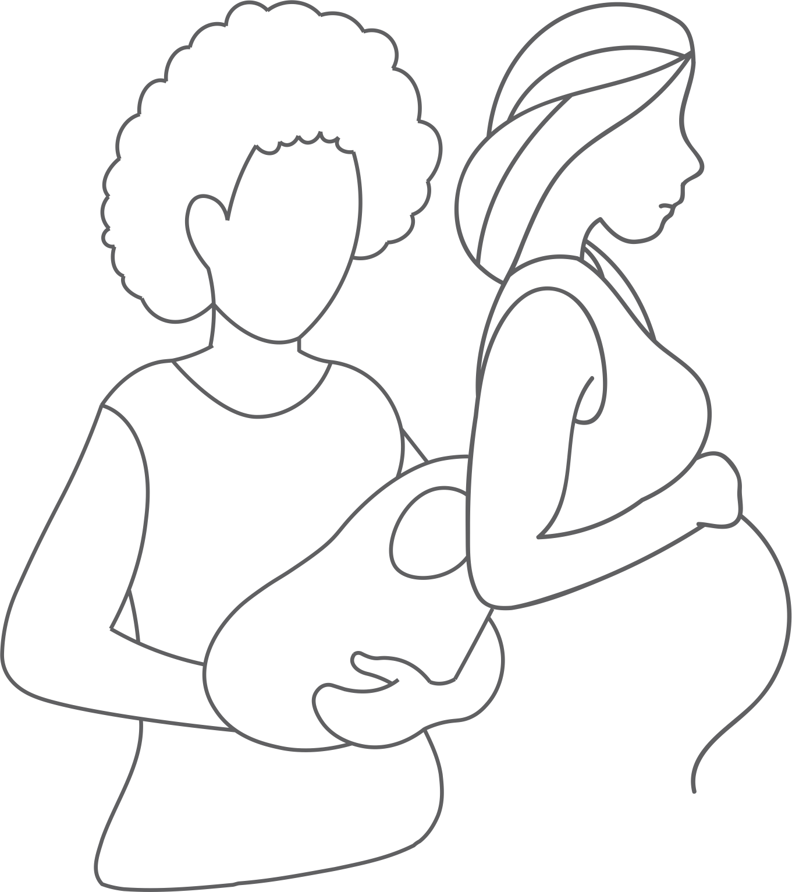
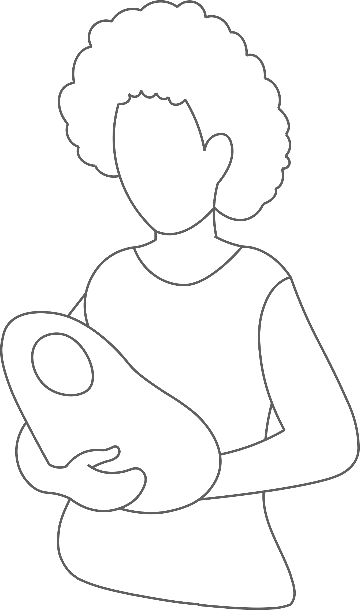

Depressão Pós-Parto
Depressão Pós-Parto
A depressão pós-parto é uma condição de profunda tristeza, desespero e falta de esperança que acontece logo após o parto. Segundo a literatura, as mulheres gestantes têm uma predisposição para o desenvolvimento da depressão, inclusive no período pós-parto, devido ao nascimento de um bebê, evidenciando perturbações emocionais ou disfunção cognitiva. Essa depressão durante o período puerperal é conhecido como Depressão Pós-parto. Esse transtorno ocorre com maior frequência no sexo feminino mas há estudos que comprovam que homens também podem desenvolver a doença.
Pode acontecer
com
qualquer gestante
qualquer gestante
A depressão pós-parto (DPP)
é um problema que atinge cerca de
das gestantes no Brasil, independente de:
idade
classe social
cor
etnia
genética

Deseja conhecer mais sobre a DPP?
Se acontecer...
a culpa não é sua
a culpa não é sua
Por isso, não se cobre!
A maternidade é um períoso de grandes mudanças na vida da mulher, em todos os aspectos da sua vida. Portanto, as causas da DPP são variadas, envolvendo questões biológicas, psicológicas e sociais. E acredite, não há maternidade perfeita!

Quer conhecer os fatores que causam a DPP?
Conheça os sintomas
A DPP geralmente manifesta um conjunto de sintomas como irritabilidade, choro frequente, sentimentos de desamparo, falta de energia e motivação, desinteresse sexual, transtornos alimentares e do sono, ansiedade, entre outros.

Quer conhecer os sintomas da DPP?
Não sofra sozinha,
peça ajuda!
peça ajuda!
O quanto antes for feito o diagnóstico será melhor para ajudar a mulher que sofre de tal transtorno. A prevenção precoce da depressão pode ser realizada por meio de intervenções conjuntas durante a gravidez, minimizando o risco das mães desenvolverem a DPP. E assim, prevenindo os graves problemas pessoas e familiares decorrentes da síndrome.
Faça seu pré-natal;
Procure um especialista caso sinta alguns dos sintomas;
Converse com alguém. Não se isole;
Não se culpe;
Não sinta vergonha de procurar ajuda.

Especialistas
Especialistas
Dr. Marco Antônio Abud Torquato Jr.
Médico Psiquiatra
CRM: 129.339
"Na verdade, no pós-parto ocorre uma montanha russa de emoções na mulher e é comum que sentimentos de alegria, de felicidade, de contemplação da nova criança, sejam alternados com momentos de tristeza, choro, raiva e ansiedade. Isso é comum e ocorre em grande porcentagem das mulheres. Normalmente isso dura de dois à cinco dias e vai embora rapidamente. Mas em algumas mulheres, esses sintomas não vão embora. E as mesmas podem desenvolver a depressão pós-parto."